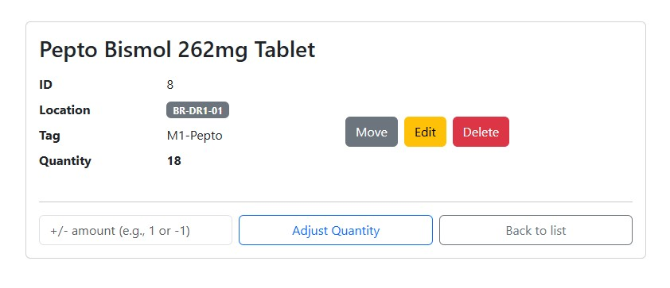
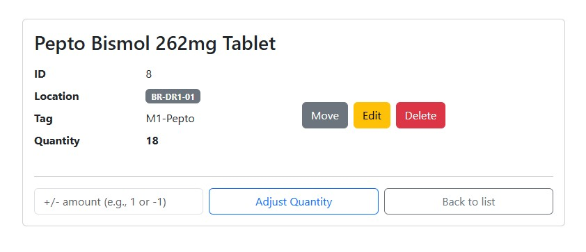
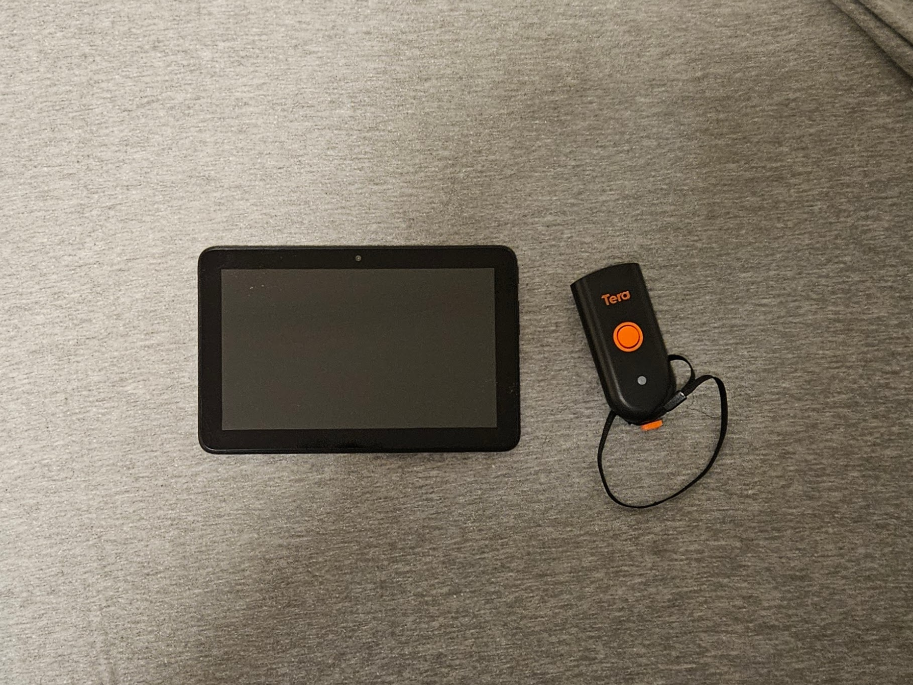

Bringing Lean Technology to My Bathroom
Introduction
After I organized my bathroom, I realized that physical organization was only half the battle, the real challenge lies in the last two steps of 5S: Standardize and Sustain. It was great knowing where everything was, but humans are lazy. Without a system encouraging long-term compliance, my bathroom was bound to return to its previous disorganized state.
Drawing on my experience at Amazon and other production environments, I decided to create a technologically backed system for item tracking. This would allow me to view real-time inventory, encourage efficient procurement, and even enable KPI tracking. Using the power of Python, CSV files, Raspberry Pi, and a bit of cursing at the Linux shell, I built a localized warehouse management system (WMS) perfect for my small bathroom.
Creating a Personal Database
I decided the best solution to tracking everything digitally was to take the inventory list I had made while stowing my items and convert it into a machine-oriented CSV file. This included each of the following fields:
- Name
- Location
- Location Code (BR-DRX-XX format)
- Unique Identifier
For packaged items, I used UPC codes. For unmarked items like toilet paper, I created my own custom alphanumeric tags to identify each product.
 

With the data structured, I wrote a Flask web app that turned the CSV file into an HTML table. This table allowed me to quickly view the items in each location. I also added a searchable field to add, remove, or move item locations with a simple click. All changes were instantly written to the CSV file, simple to edit now, but primed for conversion to SQL when the need arises.
Additionally, every movement is tracked. I plan to review the data weekly and create dashboards to identify areas for improvement.
Hardware Setup
For testing, I hosted the app on my laptop, but every time it went to sleep or I had to go to class, it disconnected. To solve this, I migrated the program to a Raspberry Pi 4, turning it into a 24/7 microserver connected directly to my router and consuming almost no power.
I also purchased a Kindle Fire tablet to serve as a dedicated client. I keep it in my bathroom where it connects to my server by default, a small reminder of my time at Amazon. Connected to the Kindle is a Bluetooth QR code scanner, enabling quick and seamless edits while saving countless hours of typing on the tablet’s keyboard. Whenever I scan an item, it instantly pulls up its entry for tracking.
System Capabilities
My WMS can:
- Track inventory
- Monitor movement history
- Provide visibility for procurement
It exemplifies the heart of Lean thinking, reducing waste, correcting errors, and continuously improving.
The Lean Connection
By adding a digital layer to 5S, I was able to close out the building phase of the 5S cycle. The system doesn’t just create data, it creates a mechanism to monitor the process. Every scan, every update, and every movement becomes a benchmark for continuous improvement.
It exemplifies Jidoka in real life. When something is missing, the system shows when that discrepancy occurred, giving me the tools to fix it. In a way, this system reminds me of an Andon on the Toyota production line, providing visibility and empowering quick correction before issues grow.
What’s Next
There’s no such thing as solving all your problems. Lean thinking is centered around continuous improvement. As I use the system, I’ve already recognized areas that can be refined.
My goal isn’t just to keep my bathroom clean, it’s to 5S my entire life.
Technology didn’t replace discipline, it made it measurable.